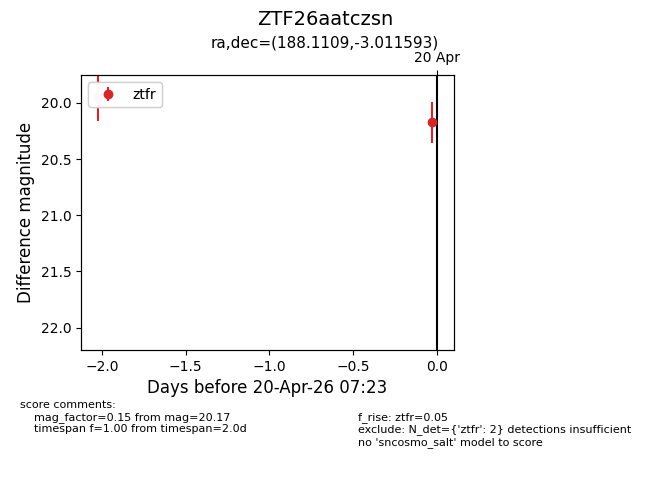
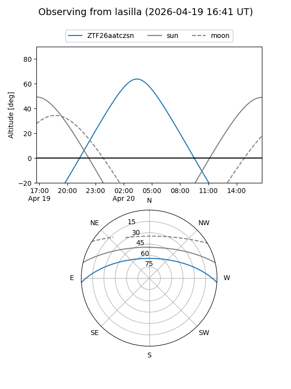
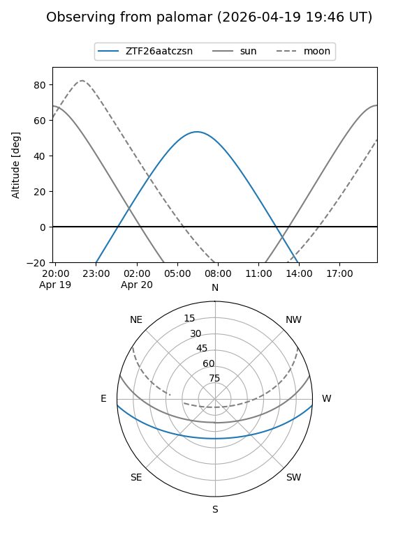
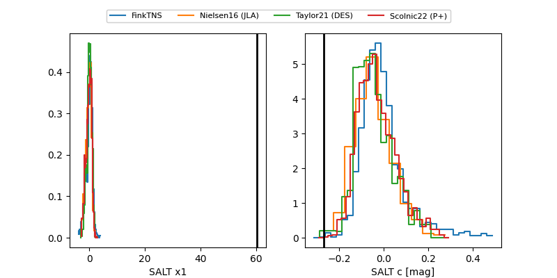

ZTF26aatczsn
Target ZTF26aatczsn at 2026-04-20 07:33
Aliases and brokers:
FINK: link
Lasair: link
ALeRCE: link
alt names
ZTF26aatczsn (ztf,fink_ztf)
Coordinates:
equatorial (ra, dec) = 188.1109,-3.01159
equatorial (HMS+DMS) = 12:32:26.61,-03:00:41.73
galactic (l, b) = (293.5537,+59.51385)
Flags:
Photometry:
last ztfr=20.17
2 ztfr detections
Lightcurve

Visibility


Additional plots
